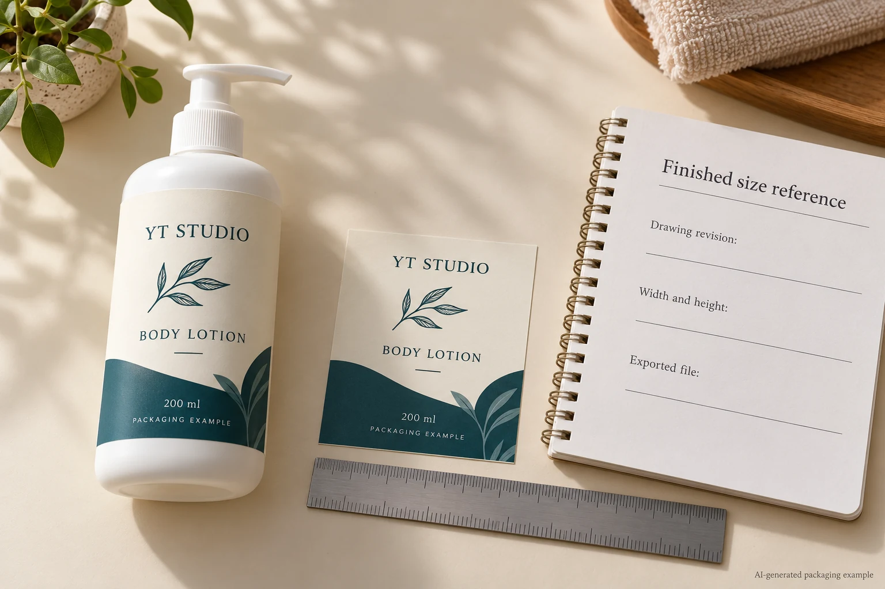
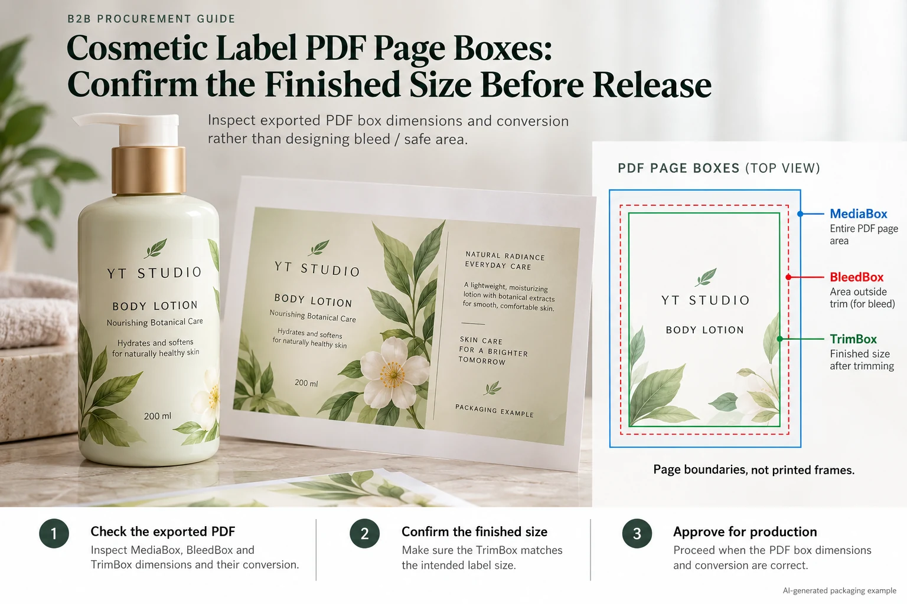

The artwork email calls the label 60 by 80 millimeters. The exported PDF opens on a larger page with marks around it. A colleague reads the displayed page dimensions and asks the printer to scale the design. That can turn an export-boundary question into an unintended artwork-size change.
Confirm which PDF boundary represents the finished label, then compare its dimensions with the approved dieline without arbitrary scaling. Page size, bleed extent and intended cut size can describe different rectangles in the same file. The task is to identify the production meaning of the delivered export.

Ask what each boundary is supposed to represent
A PDF can carry named page boxes, including MediaBox, CropBox, BleedBox and TrimBox. They should not be treated as four spellings of the label size. A file may also be missing a useful explicit box definition or have inherited values that need clarification.
Adobe's Acrobat page-cropping guidance describes showing the named page boxes. Use the relevant tool's actual box information, rather than measuring a screenshot on a monitor. The documentation is a software reference, not confirmation that the particular export is production-ready.
Have the designer and converter agree how the delivered file represents the cut geometry. A rectangular TrimBox can describe a rectangular finished extent; it does not, by itself, draw every curve of an oval or an irregular cutting path. Keep a nonrectangular dieline identifiable as its own production instruction.
Inspect the exported file, not only the design document
Record the exact PDF filename, revision and the approved artwork or dieline reference. Check the actual file handed to the supplier. A correct Illustrator artboard or a PDF generated earlier does not establish the dimensions of a later export.
Inspect the boxes and their units. If the software reports points while the drawing uses millimeters, convert explicitly and retain both the original reading and the conversion. One inch equals 25.4 millimeters and a PDF point is conventionally one seventy-second of an inch. Do not round repeatedly during the comparison.
For a hypothetical 60-millimeter dimension, the corresponding value is approximately 170.079 points. That example explains units; it is not a manufacturing tolerance or permission to resize a supplied file. Compare the resulting dimensions using the agreement for the actual job.
Use a box-and-dieline release record
| Field | Enter | Decision |
|---|---|---|
| Approved finished extent | Drawing revision, width, height and units | What size is the job intended to produce? |
| Delivered PDF | Exact file revision and page number | Which export was actually inspected? |
| Named boxes | Reported dimensions, positions and units | Which boundary carries each production meaning? |
| Cut path | Separate path reference and intended output handling | Does a nonrectangular shape remain unambiguous? |
| Discrepancy | Observed difference, owner and corrected export | What must change before release? |
Start with the approved extent. Inspect the exported box values, make any unit conversion and compare them with the agreed finished-size reference. Then check how the cut path and bleed relate to that reference. Record uncertainty if the box definition or offset is unexplained.
If the file needs correction, have the responsible artwork operator produce a revised export and repeat the check on that file. Do not approve a screenshot annotation while a different PDF remains in the production folder.

Do not make fit-to-page the repair
A print dialog may offer scaling to a paper size. That can be useful for an ordinary office review, but it is not a reliable way to preserve a label's intended geometry. Mark an office print as a layout reference if its physical size has not been checked.
For a true-size fit discussion, use an output arrangement that preserves the intended dimensions and verify the result against a physical reference. Keep that check distinct from production-size acceptance. A home printer's output is not evidence of a converter's cutting accuracy.
Our bleed, trim and safe-area guide explains the design relationships. Here the separate decision is whether the exported page definitions still communicate those relationships correctly to the next operator.
Two exports can need different treatment
A hypothetical rectangular label export has a clearly identified finished boundary matching the released drawing, with the agreed surrounding bleed. Its team can record that evidence and continue to the remaining print checks. It need not remove useful marks solely because the page appears larger on screen.
A second file includes a large presentation sheet containing several labels, notes and a sample photograph. It should not be treated as a one-up production file without agreement. The converter needs to know which objects, extent and layout are supplied for production and what remains reference material.
The correct response is clarification of the file contract, not guessing which visible rectangle must be the label. Stop if the approved drawing and inspected export disagree, or if a repeated unit conversion cannot explain the difference. Let the designer and converter resolve that discrepancy before quantities are released.
Send the dimensions with the exact export
For cosmetic labels, provide the intended dimensions and units, container reference, approved dieline, exported PDF revision and quantity per design. Identify whether the PDF is a production file, a multi-label presentation or another reference.
The inquiry form prepares your message. Send the PDF and drawing through email or WhatsApp; attachments are not uploaded by the form. Ask the supplier to acknowledge the finished-size reference before approving a change to scale.